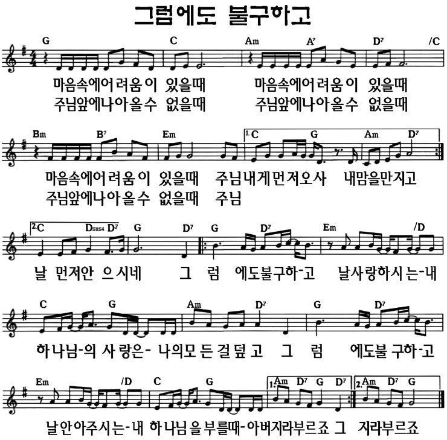

토기장이의 손에서
2026년 9월 13일 주일설교 "토기장이의 손에서"(예레미야 18장·요나서)와 같은 메시지를, 요나서와는 다른 이야기로 함께 나누는 가정예배입니다.
요한복음 21:15-17 · 다시 찾아오신 예수님
1. 묵상기도
다같이잠시 눈을 감고 마음을 가다듬습니다. 내가 크게 잘못했던 순간, "이제 나는 끝났다"고 느꼈던 순간을 떠올리며, 그 자리까지 찾아오셔서 다시 불러 주시는 하나님 앞에 나아갑니다.
2. 신앙고백
다같이나는 전능하신 아버지 하나님, 천지의 창조주를 믿습니다. 나는 그의 유일하신 아들, 우리 주 예수 그리스도를 믿습니다. 그는 성령으로 잉태되어 동정녀 마리아에게서 나시고, 본디오 빌라도에게 고난을 받아 십자가에 못 박혀 죽으시고, 장사된 지 사흘 만에 죽은 자 가운데서 다시 살아나셨으며, 하늘에 오르시어 전능하신 아버지 하나님 우편에 앉아 계시다가, 거기로부터 살아 있는 자와 죽은 자를 심판하러 오십니다. 나는 성령을 믿으며, 거룩한 공교회와 성도의 교제와 죄를 용서받는 것과 몸의 부활과 영생을 믿습니다. 아멘.
2004년 한국기독교교회협의회·한국기독교총연합회·대한성서공회 공동 새번역
3. 찬송
다같이그럼에도 불구하고 (시와그림)

유튜브에서 듣기4. 대표기도
담당자미리 정한 가족이 아래 기도문을 그대로 읽거나, 참고하여 자신의 말로 기도합니다.
사랑하는 하나님 아버지, 오늘도 온 가족이 한자리에 모여 주님께 예배드릴 수 있어 감사합니다. 우리가 크게 실수해서 스스로 자격이 없다고 여길 때에도, 주님은 그 자리까지 찾아오셔서 다시 이름을 불러 주시는 분임을 기억하게 하여 주시옵소서. 우리 가정이 서로의 실수를 다 지난 다음에야 받아 주는 것이 아니라, 지금 이 모습 그대로 다시 안아 주고 세워 주는 가정 되게 하여 주시옵소서. 예수님의 이름으로 기도드립니다. 아멘.
5. 성경봉독
다같이요한복음 21:15-17 (개역개정)
15그들이 조반 먹은 후에 예수께서 시몬 베드로에게 이르시되 요한의 아들 시몬아 네가 이 사람들보다 나를 더 사랑하느냐 하시니 이르되 주님 그러하나이다 내가 주님을 사랑하는 줄을 주님께서 아시나이다 이르시되 내 어린 양을 먹이라 하시고
16또 두 번째 이르시되 요한의 아들 시몬아 네가 나를 사랑하느냐 하시니 이르되 주님 그러하나이다 내가 주님을 사랑하는 줄을 주님께서 아시나이다 이르시되 내 양을 치라 하시고
17세 번째 이르시되 요한의 아들 시몬아 네가 나를 사랑하느냐 하시니 베드로가 근심하여 이르되 주님 모든 것을 아시오매 내가 주님을 사랑하는 줄을 주님께서 아시나이다 예수께서 이르시되 내 양을 먹이라
6. 말씀나눔
인도자가장 가까운 사람에게 큰 약속을 해 놓고, 정작 중요한 순간에 그 약속을 지키지 못한 적이 있나요? 오늘은 그런 실수를 한 사람에게 예수님이 다시 찾아오신 이야기입니다.
베드로는 예수님의 제자 중에서도 가장 앞장섰던 사람이었습니다. 예수님이 잡혀가시기 전날 밤, 베드로는 "다른 사람은 다 주를 버릴지라도 저는 절대 그러지 않겠습니다"라고 큰소리쳤습니다. 그러자 예수님은 "오늘 밤 닭 울기 전에 네가 나를 세 번 부인할 것이다"라고 말씀하셨습니다. 베드로는 그럴 리 없다며 더 강하게 우겼습니다.
그런데 그날 밤 예수님이 잡혀가시자, 베드로는 멀찍이서 따라갔습니다. 사람들이 베드로에게 "너도 저 사람의 제자가 아니냐"고 묻자, 베드로는 무서워서 "나는 그 사람을 모른다"고 대답했습니다. 그런 일이 그날 밤에만 세 번 일어났습니다. 세 번째로 부인했을 때, 닭이 울었습니다. 그 순간 베드로는 예수님이 하셨던 말씀이 떠올랐습니다. "닭 울기 전에 네가 세 번 나를 부인하리라." 베드로는 밖에 나가서 심하게 울었습니다.
며칠 뒤 예수님은 십자가에서 돌아가셨다가, 사흘 만에 다시 살아나셨습니다. 그런데 베드로는 자기가 예수님을 세 번이나 모른다고 했던 일을 잊을 수가 없었습니다. 그 일이 괴로웠던 베드로는 어부의 삶으로 돌아갔습니다.
그러던 어느 날 아침, 갈릴리 호숫가에서 그물을 던지던 베드로에게 부활하신 예수님이 찾아오셨습니다. 예수님은 제자들에게 아침을 차려 주셨습니다. 다 함께 밥을 먹은 뒤, 예수님은 베드로에게 물으셨습니다. "네가 나를 사랑하느냐?" 베드로가 "네, 제가 주님을 사랑하는 줄 주님이 아십니다"라고 답하자, 예수님은 "내 양을 먹이라"고 말씀하셨습니다.
그런데 예수님은 같은 질문을 두 번 더 물으셨습니다. "네가 나를 사랑하느냐?" 베드로는 세 번이나 같은 질문을 받으니 마음이 아팠습니다. 왜 예수님은 굳이 세 번을 물으셨을까요? 베드로가 예수님을 세 번 모른다고 했던 것과 같은 횟수였습니다. 예수님은 베드로가 세 번 실패한 자리에, 세 번 다시 찾아와 물으신 것입니다.
예수님은 베드로를 나무라거나 벌하지 않으셨습니다. 오히려 물으실 때마다 "내 양을 먹이라", "내 양을 치라"고 하시며 다시 중요한 일을 맡기셨습니다. 베드로는 실패했지만, 예수님은 그를 다시 세워 쓰셨습니다.
우리도 살면서 크게 약속해 놓고 지키지 못하거나, 두려워서 도망친 순간이 있을 수 있습니다. 예수님은 그런 우리를 실패의 자리에 그대로 두지 않으시고, 그 자리로 다시 찾아와 이름을 불러 주시는 분입니다.
7. 함께 나누는 이야기
다같이- 어린이와 함께 베드로가 예수님을 세 번 모른다고 했는데, 예수님은 나중에 세 번 "사랑하느냐"고 물으셨어요. 나도 실수했을 때 누군가 다시 믿어 줘서 기뻤던 적이 있나요?
- 함께 생각해보기 나는 "이건 너무 크게 실수해서 다시는 되돌릴 수 없을 것 같다"고 느낀 적이 있나요? 오늘 말씀은 그 생각에 대해 뭐라고 말해 주나요?
- 우리 가정을 위해 우리 가족은 누군가 크게 실수했을 때 그 일을 계속 떠올리게 하나요, 아니면 예수님처럼 그 자리로 다시 찾아가 새로운 기회를 주나요?
8. 합심기도
다같이가족이 돌아가며 짧게 한 가지씩 기도 제목을 나누고, 서로를 위해 소리 내어 기도합니다. 나이가 어린 자녀도 짧은 한마디로 참여할 수 있습니다.
9. 주기도문
다같이하늘에 계신 우리 아버지, 아버지의 이름을 거룩하게 하시며 아버지의 나라가 오게 하시며, 아버지의 뜻이 하늘에서와 같이 땅에서도 이루어지게 하소서. 오늘 우리에게 일용할 양식을 주시고, 우리가 우리에게 잘못한 사람을 용서하여 준 것같이 우리 죄를 용서하여 주시고, 우리를 시험에 빠지지 않게 하시고 악에서 구하소서. 나라와 권능과 영광이 영원히 아버지의 것입니다. 아멘.
2004년 한국기독교교회협의회·한국기독교총연합회·대한성서공회 공동 새번역